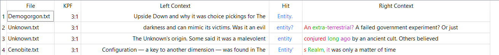
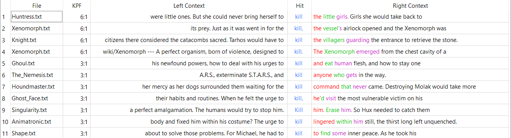
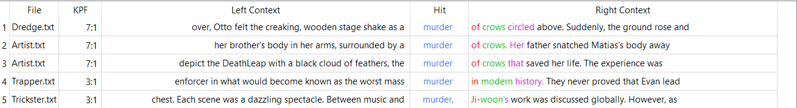
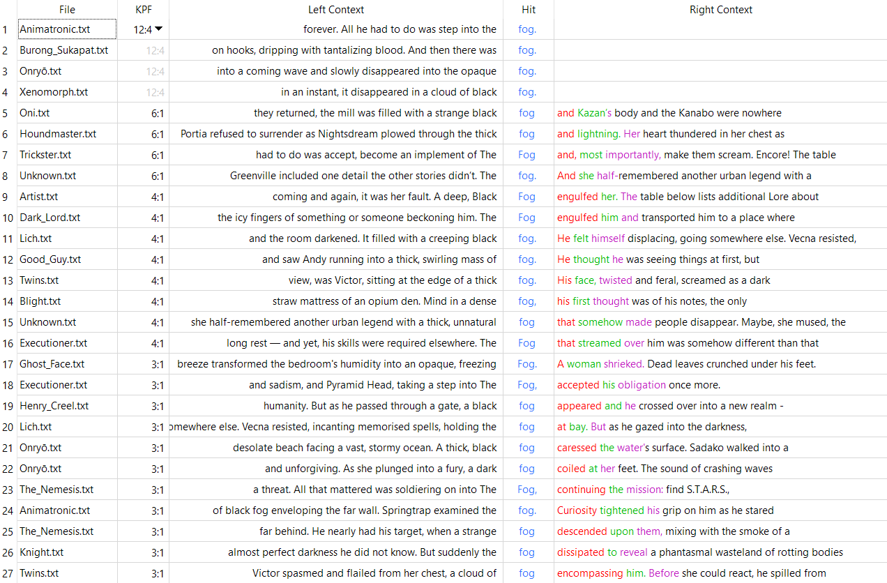
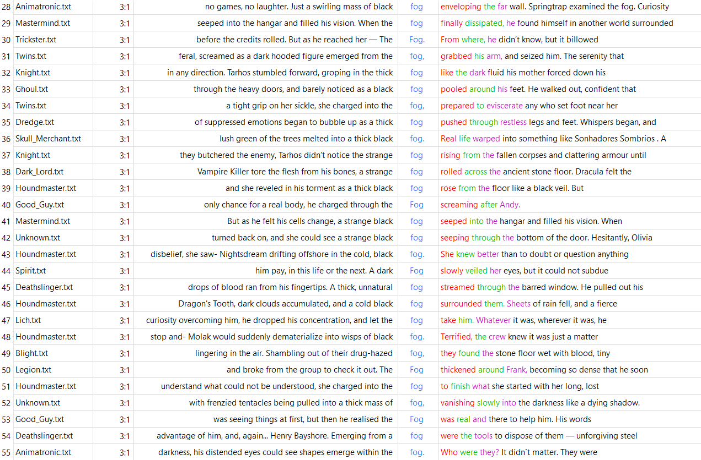

Introduction
Dead By Daylight is an asymmetrical 1v4 online multiplayer game. In this game, a seemingly cosmic/deific being known as The Entity has chosen certain characters to partake in its games.
Four Survivors must successfully repair five of seven Generators spread across each map. This will power the Exit Gates, allowing Survivors to open them and escape.
One Killer must successfully hook each Survivor for three total Hook States, or two Hook States then a Mori. Sacrificing Survivors on Hooks will please The Entity. Sacrificing two or less Survivors will displease The Entity.
Each character has a backstory: what their lives used to be like, how/when/where/why the Entity chose them, and how they behaved once inside The Entity's realm.
Killers
There are currently 42 Killers in the game, listed below. Hover over each name to see an image of the corresponding Killer.
- Evan MacMillan | The Trapper
- Philip Ojomo | The Wraith
- Max Thompson Jr. | The Hillbilly
- Sally Smithson | The Nurse
- Michael Myers | The Shape
- Lisa Sherwood | The Hag
- Herman Carter | The Doctor
- Anna | The Huntress
- Bubba Sawyer | The Cannibal
- Freddy Krueger | The Nightmare
- Amanda Young | The Pig
- Kenneth Chase | The Clown
- Rin Yamaoka | The Spirit
- Frank, Julie, Susie, Joey | The Legion
- Adiris | The Plague
- Danny Johnson | The Ghost Face
- Demogorgon | The Demogorgon
- Kazan Yamaoka | The Oni
- Caleb Quinn | The Deathslinger
- Pyramid Head | The Executioner
- Talbot Grimes | The Blight
- Charlotte and Victor Deshayes | The Twins
- Hak Ji-woon | The Trickster
- Nemesis T-Type | The Nemesis
- Elliot Spencer | The Cenobite
- Carmina Mora | The Artist
- Sadako Yamamura | The Onryō
- Dredge | The Dredge
- Albert Wesker | The Mastermind
- Tarhos Kovács | The Knight
- Adriana Imai | The Skull Merchant
- HUX-A7-13 | The Singularity
- Xenomorph | The Xenomorph
- Charles Lee Ray | The Good Guy
- Unknown | The Unknown
- Vecna | The Lich
- Dracula | The Dark Lord
- Portia Maye | The Houndmaster
- Ken Kaneki | The Ghoul
- William Afton | The Animatronic
- Burong Sukapat | The Krasue
- Henry Creel | The First
AntConc Key-Word-In-Context Analysis
KPF of the word "entity"

The word "entity" only appears in the lore pages of three different Killers, and only two of them refer to The Entity.
Despite the game centered entirely around feeding The Entity with the emotions of the characters in its realm, it barely gets mentioned in the lore of the Killers.
KWIC Pattern Frequency (KPF) of the word "kill"

Killers kill (shocking I know), so it's no surprise that the word "kill" appears fairly often.
However, what's surprising is that the word only appears in the lore pages of ten different Killers.
KPF of the word "murder"

The word "murder" only appears in the lore of four different Killers, and only two of them are referring to murder (verb) instead of murder (of crows).
KPF of the word "fog"


Here's where it gets interesting: "fog" is one of the most frequently-used words across the lore texts of all Killers.
The Fog is one of the most central entities in Dead By Daylight.
When The Entity picks a new character to place in its realm, they always disappear into The Fog. This is true for both Killers and Survivors alike.
The Fog is also present within The Entity's realm, covering each Killer's Realm with a persistent darkness.
Both Killers and Survivors can use special reagents that either lessen the oppressive presence of The Fog, or further darken it.
Killers' Motivations
The Eager
Some Killers are incredibly eager to kill, often for personal motivations.
The Shape, The Executioner, and The Onryō all frustrate the Entity, because they explicitly ignore what the Entity wants. They are also the only Killers in the game that can Mori the Survivors without needing to bring a Memento Mori. Other Killers kill for vengeance, out of grief, the thrill of the hunt, or simply because they want to kill. It just so happens that the Hooks are a convenient way to Kill the Survivors.
The Deceived
Some Killers are actively being deceived by The Entity, as it causes them to see the Survivors as the targets of their ire.
The easiest way to know which Killer is being deceived is to look at their eyes. Killers whose eyes have an unnatural white pupil are not seeing the Survivors as they are. Instead, The Entity makes them see the targets of their ire from their previous lives.